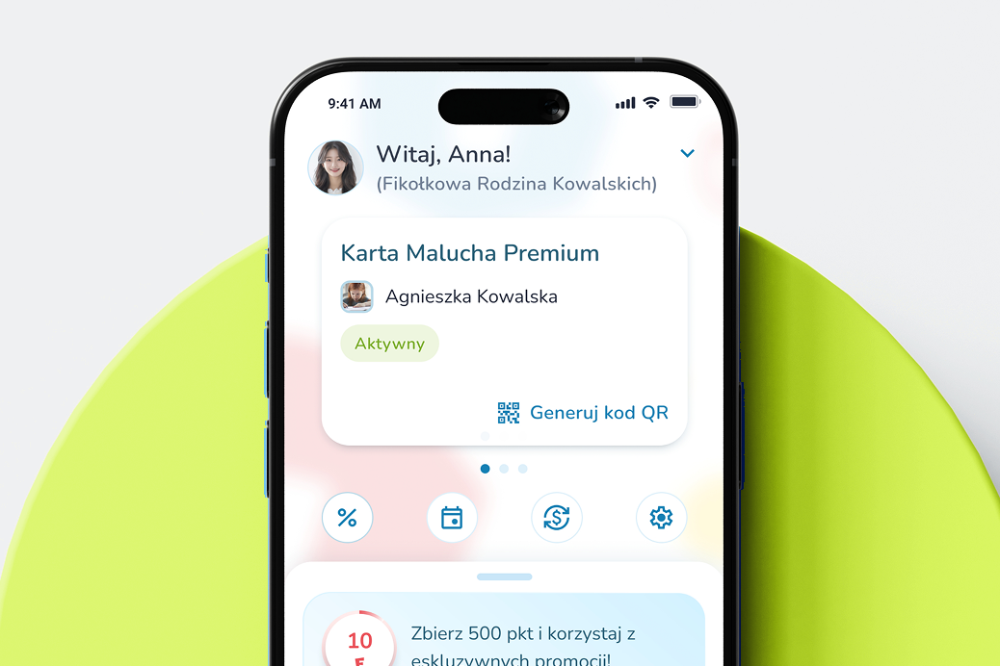
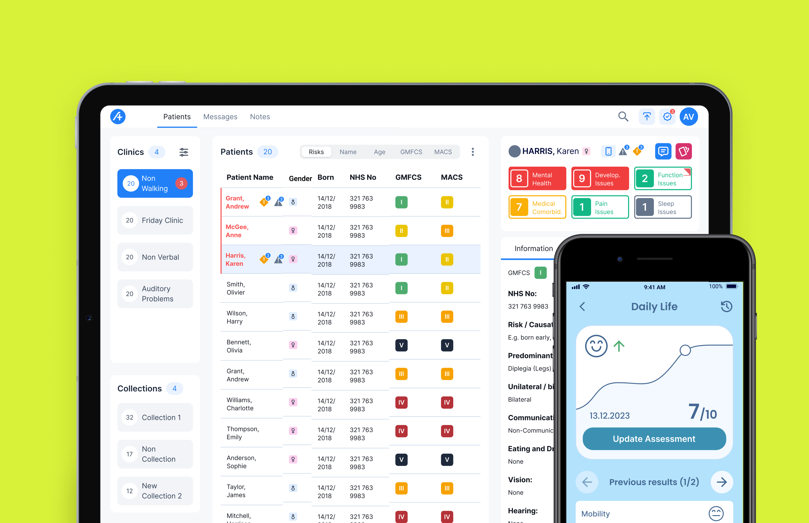
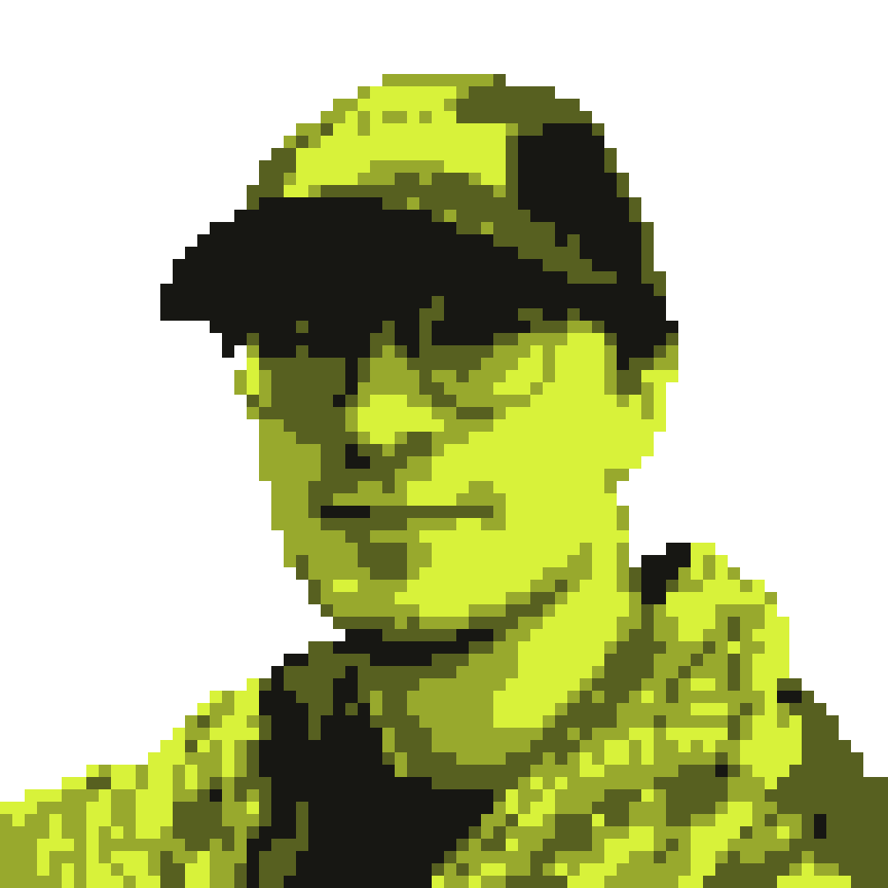

Open to new roles
| role | UX/UI & Product Designer |
|---|---|
| domain | data-heavy systems |
| industries | healthcare, traveltech, SaaS |
| scope | research → UX → UI |
| experience | 5+ years |
| status | open to new roles |
How I work
You'll know how I think before you ever hire me.
01
I take the system apart first
Data, roles, flows, technical limits, budget. Before I draw a single frame, I want to know what I'm actually dealing with.
02
Business goals, user goals
Every solution is built where those two overlap, out of what's actually on the table: data, constraints, what people really do with the product. Taste comes last, if at all.
03
I stay until it's live
Design that dies in handover isn't design. I sit with your developers through implementation, answer the edge cases nobody drew, and check the build against the intent.
Selected work


Five messy problems, and how I untangled them.
A huge, data-heavy healthcare ecosystem — for people who are counting seconds
- ProblemMasses of data, everything connected to everything, and hospitals still running on paper while serving patients. The job was to digitise the whole flow and cut time on task on the interactions that happen hundreds of times a shift.
- What I didLed UX/UI for most of that time: exploring ways to cut time on task, designing new modules, and building the design system.
- Result +17%Task success rate (average) −22%Error rate (average) ↘Friction

Four new business mechanics, and no app to run them on
- ProblemFikołki was pivoting its play centres onto subscriptions and QR gates, and wanted a family tree and on-site points on top. Four new mechanics, all decided, none of them with a screen.
- What I didDesigned the product from an empty canvas: a family tree holding every kid on one account, a QR code ready before the queue builds, three subscription tiers you can actually tell apart, and points that name what they buy.
- Result 10.5kSubscriptions sold −47%Birthday enquiries at reception +13%Event sales
A design system that gives every screen the same answer
- ProblemUsers had to relearn the same control in each module, which is a usability tax nobody budgeted for. Internally it was worse: designers redrew what already existed and developers guessed which version counted.
- What I didBuilt a scalable, flexible system for several stakeholders at once: a token structure with a semantic layer on top, shipped together with the developer environment rather than thrown over the wall after it.
- Result ↗Speed to a finished screen ◐Light and dark from one system ↘Developer guesswork

A patient management system a small clinic could actually afford to use
- ProblemSmall cerebral palsy clinics needed to run assessments. The only PMS on the market cost millions of pounds and was built for large hospitals. The simple version didn't exist, so we built it.
- What I didDesigned both ends: a web tool for the clinic — patients, messaging and documentation in one place — and a mobile app for parents and for patients with light CP. That second group set the rules, so mobility and cognitive constraints drove the UI from the first frame.
- Result ↘Cost of running the system ↔Direct contact with the patient ↗Ease of use and training
A holiday booking flow that survives the fifth step
- ProblemThe site could sell a holiday and then couldn't take payment for it — you reserved and waited for a call back. And when a sale did land, it was often a resold trip, because the agency's own offers were invisible on the agency's own site.
- What I didAlone, start to finish. I checked what was broken, then redesigned the whole path: search, filters, results, and a checkout you could actually pay in. Desktop and mobile, on the site's first design system.
- Result ✓Checkout online, where there was none ↘Steps from search to the right offer ↗Agency's own trips visible in results
What I work in
Figma
Claude Code
Cursor
Miro
FigJam
Adobe CC
About
I came into design through systems. It shows.
I read a product as a set of dependencies, not a stack of screens waiting to be painted. Give me a lot of data and very little room for it, and I'm in my element.
Off the clock the interest doesn't switch off. I study wayfinding in stations and airports, the logic of everyday objects, and above all UX in games — where the interface has to stay invisible and lead the player by the hand at the same time. Those are the strictest constraints I know, and they travel well into products that aren't games.

Tell me what's tangled. I'll tell you where I'd start.
Two sentences about the problem is enough. You get a straight answer back: what I would do, and in what order.
Email
dsikoradesign@gmail.com
Prefer another channel? I'm on LinkedIn and I answer just as fast there.